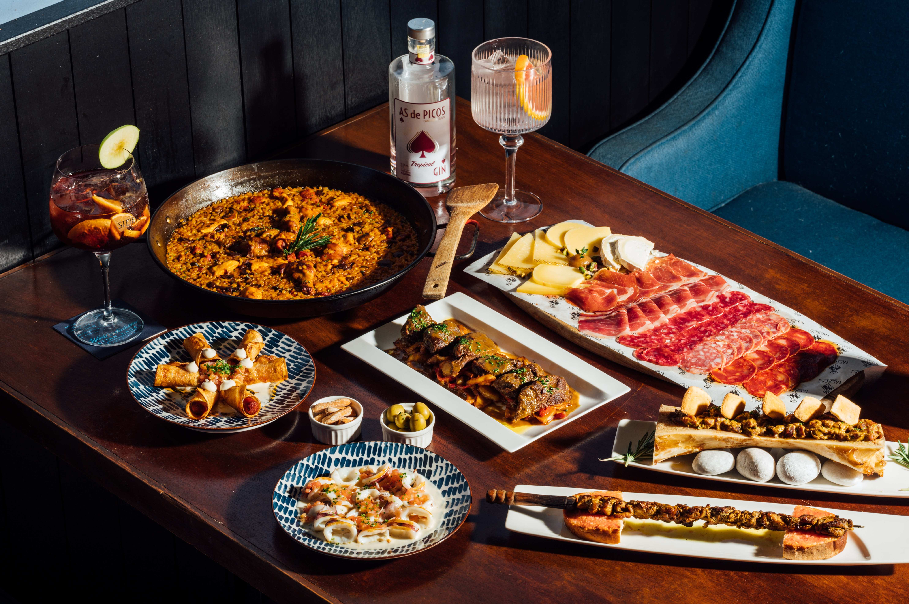

Quand partir à Séville ?
Conseil
La ville de Séville, capitale de l'Andalousie, bénéficie de superbes conditions climatiques. Elle se prête aux visites touristiques toute l'année, puisqu'elle jouit d'une température agréablement douce même en hiver.Néanmoins, la meilleure période pour partir à Séville se situe plutôt au printemps et à l'automne. On y retrouve de belles conditions avec une chaleur agréable et une majorité de journées ensoleillées.
Les expressions utiles au restaurant
Voici quelques expressions que vous serez sans doute amenés à utiliser au cours de votre voyage à Séville
- ¿ Cuál es el plato del día ? : Quel est le plat du jour ?
- ¡ Salud ! / ¡ Buen Provecho ! : Santé ! / Bon appétit !
- Tengo sed / hambre » : J’ai soif / faim
- ¿ Qué aconsejas ? » : Que me recommandez-vous ?
- ¿ Puedo tener la cuenta, por favor ? : Je peux avoir l’addition, s’il vous plaît ?
- Aceptan las tarjetas de crédito ? » : Acceptez-vous les cartes de crédit ?
- Quedese con la vuelta : Gardez la monnaie
- ¿ Dónde se encuentran los servicios ? : Où se trouvent les toilettes ?